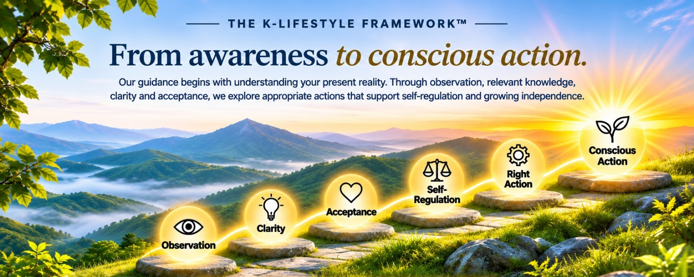
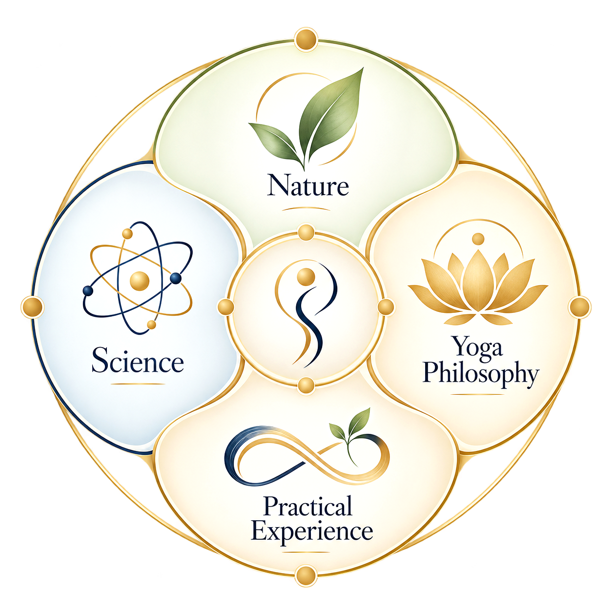
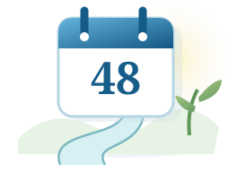
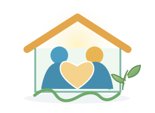

Nature
Notice how daylight, surroundings, food, rest and natural rhythms affect everyday living.
“A true teacher does not tell you what to see, but guides you to discover how to observe reality through awareness.”— D. Krishna Kumar
Throughout life, we learn from many people. Our parents, teachers, friends, colleagues and the experiences we encounter all influence how we see the world.
We learn what is right and wrong, what we should pursue, how we should behave and what a successful life might look like.
But how often do we stop to observe whether what we have learned is reflected in how we actually live?
We may know the importance of patience, yet find ourselves reacting with anger.
We may understand the value of rest, yet continue working when our body needs attention.
We may care deeply about our relationships, yet struggle to express what we genuinely feel.
These are not reasons to judge ourselves. They are opportunities to observe the reality of our everyday living.
This is where meaningful guidance begins.
Your life is your own experience. No one else can observe it entirely on your behalf.
You have your own responsibilities, relationships, surroundings, experiences, hopes and difficulties.
What works meaningfully for one person may not be appropriate for another.
A true teacher respects this individuality.
Rather than deciding what you must see, believe or become, meaningful guidance creates space for you to question, observe and recognise your own reality.
Consider a familiar experience.
Someone says something that upsets you. You respond immediately. Later, when you are alone, you wonder why you reacted that way.
What if, before responding, you had recognised the emotion arising within you?
Would you have responded in the same way?
There is no predetermined answer.
The purpose is not to tell you how you should have behaved. It is to help you recognise what happened within you and how that awareness might inform your next action.
Freedom to observe begins when you can look at your own experience without immediately judging, defending or rejecting it.
Knowing what to do and discovering how to live it are not always the same.
Most of us already know many things that support our well-being.
We know that rest matters, that food influences our daily functioning, that relationships need attention and that our thoughts and emotions influence our actions.
Yet knowing something does not necessarily mean we practise it.
Why?
Perhaps our responsibilities leave little time for reflection.
Perhaps familiar patterns influence our decisions before we recognise them.
Or perhaps the advice we have received does not fully consider our circumstances.
Meaningful guidance begins by exploring these realities with you.
Instead of immediately introducing another routine, we begin with questions.
What is happening in your life now?
What have you already tried?
What are you experiencing?
What may be influencing your everyday decisions and actions?
What can you realistically learn, practise and sustain?
Through observation, reflection and appropriate action, you begin discovering possibilities that are relevant to your own life.
The purpose of guidance is not to make you dependent on someone else's answers, but to strengthen your ability to observe, learn and act with greater clarity.
Your life is not lived one subject at a time. Everything you experience belongs to the same life.
Think about an ordinary day.
You wake up after an unsettled night.
Your body feels tired, but your responsibilities are waiting.
You begin your work. An unexpected situation creates pressure. Your thoughts become occupied, your emotions influence your responses, and perhaps you speak differently to someone you care about.
Later, you realise that the day has passed without giving much attention to yourself.
Nothing in this experience happened entirely separately.
Your rest, physical condition, thoughts, emotions, responsibilities, relationships and surroundings may all have influenced one another.
This is the everyday reality we invite you to observe.
Not merely what happened around you, but also what happened within you.
Not simply what you did, but what influenced your actions.
Not only what you know, but how that knowledge is reflected in your living.
Awareness does not mean that every difficulty disappears or that every response becomes perfect.
It creates an opportunity to recognise what is happening and consider an appropriate response.
When observation becomes part of everyday living, learning is no longer limited to a classroom, a book or a coaching session. Life itself becomes an opportunity to learn.
Before continuing, consider one situation from your recent everyday experience.
It could be a conversation, a decision, an emotional response, a responsibility or a moment when you felt uncertain.
You do not need to share it with anyone.
Simply recall what happened.
What did you experience?
Notice what you remember about your thoughts, emotions and actions.
What may have influenced your response?
Consider your circumstances, expectations, familiar patterns and the people or surroundings involved.
What can you recognise now that you may not have noticed at that moment?
There is no need to force an answer.
Even recognising that you do not yet know can become the beginning of further observation.
This small reflection is an invitation to experience the approach, not a test or an assessment.
At Lifestyle for Lifetime™, we recognise that every person arrives with a different present reality.
You may be looking for greater mental clarity, a more sustainable daily rhythm, improved physical well-being, emotional regulation, meaningful relationships or a better way to manage your responsibilities.
You may already have considerable knowledge but find it difficult to apply consistently.
Or you may simply want to understand yourself and your everyday living more clearly.
Your Need Is the Beginning of Our Conversation.
Our personalised guidance brings together Nature, Science, Yoga Philosophy and Practical Experience.
Through the K-Lifestyle Framework™, we begin by exploring your present circumstances, existing patterns, responsibilities and individual needs.
From there, we consider what may be appropriate for you to learn, practise and regulate through realistic everyday actions.
We do not assume that everyone needs the same routine, progresses at the same pace or begins from the same place.
Our role is to support your observation, encourage meaningful learning and help you develop practical approaches that you can carry into your own life.
The guidance is collaborative. Your questions, experiences and observations remain important throughout the process.
We do not begin by deciding what your life should look like. We begin by exploring how your life is functioning now.
Because meaningful progress begins with recognising where you are.
Get Clarity. Reach Purity.
Lifestyle for Lifetime™ — Personalised Lifestyle Coaching • Human Performance Training • Lifelong Transformation
Continue to the Awareness Wheel →“We spend a lifetime learning how to live in the world, but how much of what we have learned do we actually apply to the reality of our own lives?”
— D. Krishna Kumar

Our guidance begins with understanding your present reality. Through observation, relevant knowledge, clarity and acceptance, we explore appropriate actions that support self-regulation and growing independence.

We bring together four ways of learning about life. Each helps us look beyond a single habit or problem, so guidance can fit your body, mind, environment and responsibilities.
What can we observe, learn and practise in the life you live today?

Notice how daylight, surroundings, food, rest and natural rhythms affect everyday living.
Use reliable knowledge about sleep, movement, nourishment and behaviour to inform suitable choices.
Explore awareness, acceptance and conscious action through appropriate traditional teachings and practice.
Observe what works within your real responsibilities, reflect on your experience and adjust your practice.
THE INTERCONNECTED DIMENSIONS OF LIFE
Explore how different aspects of everyday living connect and influence one another.
Explore the seven dimensions →“There is a guru in every one of us when we remember we are all just disciples.”
— D. Krishna Kumar
Explore six coaching and training pathways. Enquire to discuss suitable guidance.

Your life, responsibilities, experiences and aspirations are unique. Our personalised guidance begins with understanding where you are today, helping you develop clarity, regulate everyday patterns and work towards meaningful, sustainable progress.
Enquire about this pathway →
Understanding something is one step. Bringing it into everyday life takes practice. This structured journey combines learning, self-observation, practical application and guidance to help you develop greater consistency in how you live.
Enquire about this pathway →
Your body supports everything you do each day. Through yoga, fitness and appropriate physical practices, we guide you towards developing strength, flexibility, mobility and greater confidence in your physical capabilities.
Enquire about this pathway →Thoughts and emotions influence how we experience and respond to life. Through meditation, mindful observation and practical yoga philosophy, we guide you in developing awareness, mental clarity and thoughtful responses to everyday situations.
Enquire about this pathway →
The way we live influences the people closest to us. Shared learning creates opportunities to understand one another, improve communication and develop healthier everyday practices while respecting each person’s individuality.
Enquire about this pathway →
Every community and workplace brings together people with different responsibilities, experiences and challenges. Our educational sessions bring practical lifestyle awareness, well-being and human performance guidance into shared environments.
Enquire about this pathway →“The distance from dream to reality is discipline through consistency.”
— D. Krishna Kumar

The way you sleep, eat, move, respond to pressure and manage everyday responsibilities influences your physical well-being, mental clarity and quality of life.
Our guidance helps you observe these patterns, recognise what needs attention and develop practical routines suited to your circumstances.
Establish a more consistent daily rhythm.
Explore this areaRecognise hunger and develop mindful eating habits.
Explore this areaSupport suitable physical activity, recovery and daily energy.
Explore this areaOrganise priorities and address unfinished duties.
Explore this areaObserve your responses and practise more conscious action.
Explore this areaReflect on values, relationships and life direction.
Explore this areaExplore simple, practical guidance that fits your everyday life.
View all 12 service areas“Every breath counts as a new birth.”
— D. Krishna Kumar
HOLISTIC SUPPORT FOR YOUR WELLBEING JOURNEY
 FOUNDER · LIFESTYLE FOR LIFETIME™
FOUNDER · LIFESTYLE FOR LIFETIME™Founder | Human Performance Lifestyle Coaching & Transformation Educator
Certified Advanced Level-3 Yoga Teacher and Evaluator
With over 12 years of professional experience, he has guided individuals across India and internationally, including founders, senior leaders and C-suite professionals. Every person deserves individual attention, regardless of their professional title.
His educational background includes Marine Engineering learning in India and the United Kingdom. Work and relationships across different countries, cultures and professional environments have broadened his understanding of diverse life circumstances.
He participated as a natural athlete in two national Men’s Physique competitions—Bengaluru 2018 while following a non-vegetarian diet, and Delhi 2025 after transitioning to vegan living. These experiences inform his understanding of discipline without making any one diet or performance goal compulsory for others.
As creator of the K-Lifestyle Framework™, he connects Nature, Science, Yoga Philosophy and Practical Experience with stress observation and management, clarity, self-regulation, human performance and lifelong well-being.
His purpose is to help individuals develop awareness, practical abilities and consistent self-regulation for meaningful goals and growing independence in life.
Read the complete Founder profile
Tell us what you would like to understand, strengthen or regulate in everyday living. You can begin without choosing a programme. We will discuss a suitable clarity assessment and the appropriate next step.
Your enquiry will be handled with professional discretion. Read our Privacy Policy.